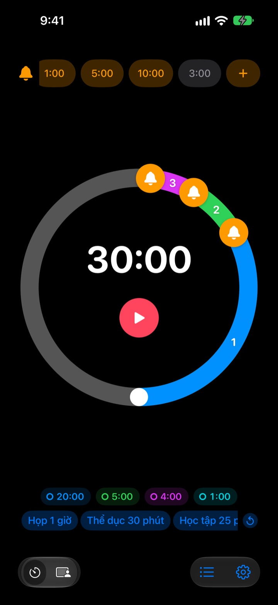
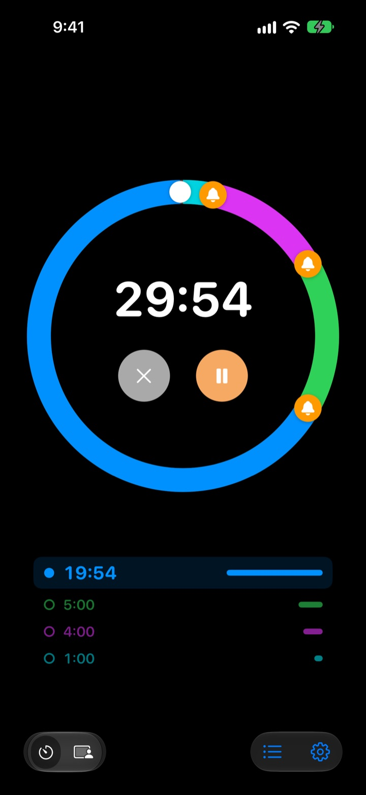
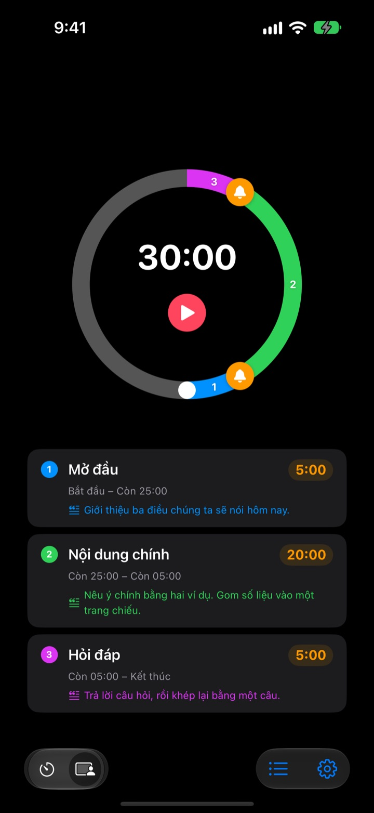
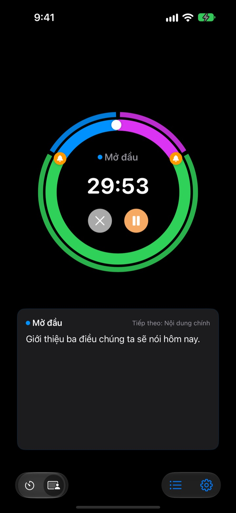

Không phải lúc đã hết,
mà là trước đó
5 phút trước khi bài thuyết trình kết thúc, 3 phút trước khi cuộc họp khép lại. Rereminder báo cho bạn ở mọi mốc bạn chọn, để bạn khỏi phải liếc đồng hồ liên tục.
Báo trước miễn phí, không giới hạn. Dùng trên iPhone, Apple Watch và Mac.

Thử ngay tại đây
Chọn thời lượng và các mốc báo, rồi bấm nút đỏ. Một phút trôi qua trong một giây, và mỗi lần báo sẽ kêu đúng lúc.
Đã bao giờ đồng hồ reo khi mọi thứ đã muộn?
Hẹn giờ thông thường chỉ reo khi về 0. Bài nói hết giờ trước khi đến phần kết luận, buổi học kết thúc mà chưa tóm tắt, cuộc họp lấn sang lịch sau mà chưa quyết được gì. Điều bạn cần không phải tiếng báo đã hết giờ, mà là một tín hiệu khi vẫn còn kịp để khép lại.
Báo trước khi hết, bao nhiêu lần cũng được
Kéo chuông trên mặt đồng hồ đến mốc 10, 5 hoặc 1 phút trước khi hết, hay bất kỳ chỗ nào khác. Không giới hạn số lượng, và mỗi lần báo có thể kèm lời nhắc riêng như "Chốt lại slide".
Khi tắt màn hình, thời gian còn lại vẫn hiện trên Màn hình khóa và Dynamic Island, còn Apple Watch rung nhẹ trên cổ tay.

Chia bài nói thành từng phần
Mở đầu 5 phút, nội dung chính 20 phút, hỏi đáp 5 phút. Đặt tên và viết kịch bản cho từng phần. Mỗi lần chuyển phần, bạn được báo bằng chính tên phần đó, nên thời gian tự khắc được giữ đúng. (Pro)

Điều cần nói lúc này, hiện ngay trên màn hình
Trong lúc chạy, kịch bản của phần hiện tại và phần tiếp theo hiện chữ lớn. Quá 0, đồng hồ vẫn đếm tiếp để bạn biết mình đã lố bao lâu. (Pro)

Bắt đầu chỉ với ba bước
- 1
Đặt thời gian
Xoay mặt đồng hồ, hoặc chạm vào thời gian để nhập. Một vòng là 60 phút, hai vòng là 120 phút.
- 2
Đặt mốc báo
Chạm vào nhãn như 1:00 hay 5:00 ở trên, hoặc kéo chuông lên mặt đồng hồ.
- 3
Bắt đầu rồi yên tâm
Khóa iPhone. iPhone và Apple Watch sẽ báo ở mọi mốc bạn đã đặt.
Những cách đặt hay dùng nhất
- Thuyết trình 20 phút
- Trước 5 phút "Chuyển sang kết luận", trước 1 phút "Cảm ơn"
- Tiết học 45 phút
- Trước 10 phút "Giao bài tập", trước 3 phút "Tóm tắt"
- Họp 30 phút
- Trước 5 phút "Chốt quyết định"
- Buổi pilates hoặc yoga
- Chế độ Phiên, mỗi chuỗi động tác một phần (Pro)
- Học 25 phút
- Trước 5 phút, xong thì nghỉ
- Nghỉ 3 phút giữa các hiệp tập
- Trước 30 giây "Chuẩn bị hiệp sau"
- Buổi mentoring 1 tiếng
- Trước 15 phút và 5 phút
Lưu cách đặt hay dùng thành mẫu để mở lại chỉ bằng một chạm (từ gói Ghi nhớ trở lên). Bạn cũng có thể bắt đầu hoặc dừng hẹn giờ bằng Phím tắt và Siri.
Báo trước miễn phí. Chỉ trả tiền khi muốn ứng dụng ghi nhớ.
Miễn phí
- Báo trước không giới hạn
- Lời nhắc riêng cho từng lần báo
- Hoạt động trực tiếp trên Màn hình khóa và Dynamic Island
- Báo liên tục đến khi bạn phản hồi, kết thúc bằng báo thức đầy đủ
- Ứng dụng Apple Watch và thanh menu trên Mac
- Mọi màu chủ đề
Ghi nhớ · Pro
- Ghi nhớ: lưu cách đặt thành mẫu, mở lại chỉ bằng một chạm
- Ghi nhớ: mở lại ứng dụng, mọi thứ vẫn như lần trước
- Pro: toàn bộ Ghi nhớ cùng Chế độ Phiên với tên phần và kịch bản
- Pro: đếm giờ lố, lịch sử và thống kê
Mỗi gói đều có thể chọn đăng ký theo năm hoặc mua một lần dùng trọn đời. Chế độ Phiên, đếm giờ lố và lịch sử có thể dùng thử vài lần trước khi trả tiền.
Không quảng cáo. Một Vé trọn đời còn mở khóa mọi ứng dụng do Leeo làm.
Câu hỏi thường gặp
Có lần báo không kêu.
Hầu hết là do quyền thông báo hoặc chế độ Tập trung. Kiểm tra quyền thông báo trong ứng dụng ở Cài đặt › Cách thông báo. Nếu bạn dùng Tập trung, hãy thêm Rereminder vào ứng dụng được phép trong Cài đặt › Tập trung của iOS. Ở chế độ im lặng chỉ có rung. Nếu Rereminder nằm trong Cài đặt › Thông báo › Tóm tắt theo lịch, thông báo sẽ bị gom lại và đến muộn, hãy bỏ nó ra.
Ở chế độ im lặng, tôi có biết khi hết giờ không?
Có. Bật "Kết thúc bằng báo thức đầy đủ" thì chuông sẽ reo to cả khi đang im lặng hay Tập trung. Bật "Báo liên tục đến khi tôi phản hồi" thì sẽ báo mãi đến khi bạn chạm Dừng hoặc Báo lại trên thông báo.
Apple Watch không đồng bộ.
Mở Cài đặt › Thiết bị của tôi trong ứng dụng, bạn sẽ thấy còn thiếu bước nào. Đồng hồ phải được ghép đôi với iPhone này, Rereminder phải được cài trên đồng hồ, và sau khi cài bạn cần mở ứng dụng trên đồng hồ một lần. Sau đó hẹn giờ vẫn sang đồng hồ dù ứng dụng trên đồng hồ đang đóng.
Mac hiện là chưa kết nối.
"Đã kết nối" nghĩa là ứng dụng đã mở trên chiếc Mac đó trong 10 phút gần nhất, nên Mac vừa thức dậy sẽ hiện ra sau vài phút. Hai thiết bị cần cùng một tài khoản iCloud và bật iCloud Drive. Ứng dụng Mac cần macOS 26 trở lên.
Tôi đã trả tiền nhưng chưa mở khóa.
Chạm "Khôi phục giao dịch mua" ở màn hình gói, khi đăng nhập đúng Tài khoản Apple đã dùng để trả tiền. Gói trọn đời vẫn quay lại dù bạn xóa ứng dụng hay đổi máy.
Các mẫu đã lưu bị khóa.
Mẫu vẫn còn nguyên. Khi không có Ghi nhớ hay Pro, chúng hiện ở trạng thái khóa và mở lại ngay khi bạn mua một trong hai.
Làm sao để được hoàn tiền?
Apple là bên xử lý hoàn tiền. Hãy gửi yêu cầu tại reportaproblem.apple.com bằng Tài khoản Apple đã trả tiền. Nếu do lỗi, hãy báo cho tôi nữa để người sau không gặp lại.
Có thể dùng thử mà không cài không?
Mở m1zz.github.io/rereminder trên iPhone, hẹn giờ sẽ chạy ngay dưới dạng App Clip. Mặt đồng hồ và các mốc báo đều có. Mẫu, Chế độ Phiên và ứng dụng đồng hồ có trong bản đầy đủ.
Dùng được trên những thiết bị nào?
iPhone chạy iOS 26 trở lên, Apple Watch chạy watchOS 11.6 trở lên và Mac chạy macOS 26 trở lên. iPad hiện chưa được hỗ trợ. Ứng dụng có 24 ngôn ngữ.
Dữ liệu của tôi được lưu ở đâu?
Hẹn giờ, mẫu, tên phần, kịch bản và lịch sử đều nằm trên thiết bị của bạn và sẽ mất khi xóa ứng dụng. Ứng dụng chỉ gửi thống kê sử dụng ẩn danh để sửa lỗi. Chi tiết có trong chính sách quyền riêng tư.
Có câu hỏi hay góp ý? Hãy gửi đến leeo@kakao.com. Tôi thường trả lời trong 2 đến 3 ngày.